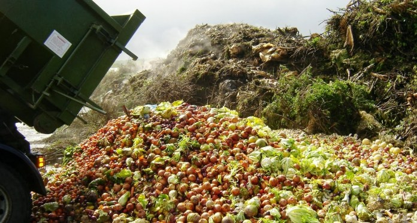
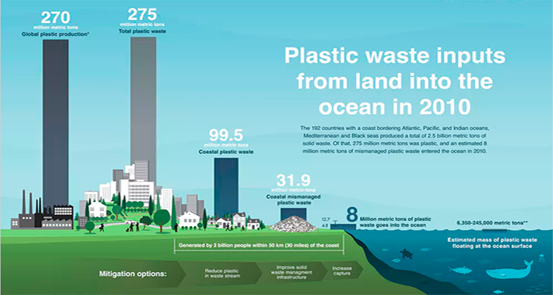

Daily Food Waste
Awareness
- Australia produces enough food to feed 60 million people each year.
Australian households and businesses waste 4 million tonnes of food annually, this could fill the Melbourne Cricket Ground six times over! - Major supermarkets such as Woolworths and Coles contribute to waste as they refuse to sell fruits and vegetables that don't meet their specifications.
- Environmentally, food waste accounts for about 8% of all global greenhouse gas emissions.


The Rise Of Plastic
Awareness
- Around 8 million metric tonnes of plastic goes into the ocean each year - this is equivalent to 16 shopping bags full of plastic for every metre of coastline.
- Of this between 6,350 and 245,000 metric tons of plastic waste is estimated
to float on the ocean’s surface, presenting the
question:
Where does the rest of it end up?
- Wherever it ends up, plastic has enormous potential for destruction. More than 690 marine species are known to interact with marine little, with nets and fishing debris snagging and drowning turtles, seals, and other marine wildlife. In Australia alone, it is estimated that more than 10,000 turtles have been trapped by nets and globally around one-third of all turtles are estimated to have eaten plastic in some form as they mistake floating plastic for jellyfish.
- Furthermore, seabirds eat everything from plastic toys, nurdles and balloon shreds to foam, fishing floats and glow sticks.